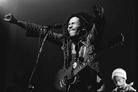

Flash news Bob marley n'est finalement pas mort decouvrez ce qu'il est devenue.

Le défunt Bob Marley n'est finalement pas mort. Selon des sources proches du couple, Marley et son épouse, Rita Marley, auraient été en contact durant tout ce temps, ce qui explique l'absence totale de Bob Marley dans l'espace public ces dernières années. L'annonce a rapidement fait le tour des réseaux sociaux et a suscité beaucoup de speculation quant à son retour sur la scène musicale , Bob Marley a décidé de prendre un nouveau tournant dans sa vie. Après avoir traversé l'Amérique du Sud avec sa musique et sa vision, l'iconique chanteur a finalement décidé de poursuivre son rêve et mener une nouvelle carrière dans le sport.
Que deviens bob marley ?
Aujourd'hui, Bob Marley fait équipe avec le club amateur Rio Reggae FC et s'est donné pour mission de voir le club à la victoire lors de la ligue des champions. Après des mois de dur labeur et d'un travail d'équipe exemplaire, Rio Reggae FC a remporté la ligue des champions et a été nommé champion de la saison.
En plus de guider le club au sommet, Bob Marley continue à donner cours de football dans les principales villes Américaines . Ces séances sont très divertissantes et permettent aux joueurs de tous âges de devenir meilleurs et de progresser dans leur passion.
Bob Marley devient entraineur.
Pour couronner le tout, Marley a décidé d'ouvrir publiquement les recrutements de sont équipe , offrant ainsi aux jeunes une chance unique de s’améliorer et de découvrir un jeune talent.
Après avoir influencé le monde de la musique pendant plus de cinq décennies, Bob Marley montre de nouveau sa capacité à changer le jeu à travers le football et fait le bonheur de ses fans encore une fois.
Voir nos realisation
-
Mbappe rejoint le real madrid
C'est officiel Mbappe à rejoint son coequipier Karim Benzema au real de Madrid pour 4 prochaines années. Prolongeras-t-il ?
-
Brigitte est tomber enceinte
L’accouchement Nous avons enfin la réponse au verdicte.. C’est un garçon ! Brigitte a donné naissance lundi à un bébé de quelque 3,8 kilogrammes, son premier enfant avec Emmanuel Macron.
-
Mickael jackson est encore en vie
Depuis qu’il a été tué par les médicaments (et une extrême fatigue) le 25 juin 2009, Michael Jackson, c’est un peu comme les extraterrestres : tout le monde ou presque croit l’avoir vu quelque part.